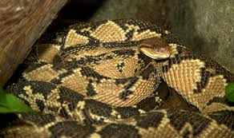

Anakonda

Grön anakonda räknas som en av världens största ormar och kan bli upp till 5 meter lång och väga upp till 150 kg. Den är mycket kraftig jämfört med andra ormar.
Sjöorm

Sjöormen är ett mytologiskt djur som ofta beskrivs som en gigantisk orm i havet. Den förekommer i sjömanstraditioner och kryptozoologi.
Buskmästare

Buskmästaren är en stor giftsnok som lever i Central- och Sydamerika. Den är kraftig men inte särskilt aggressiv.